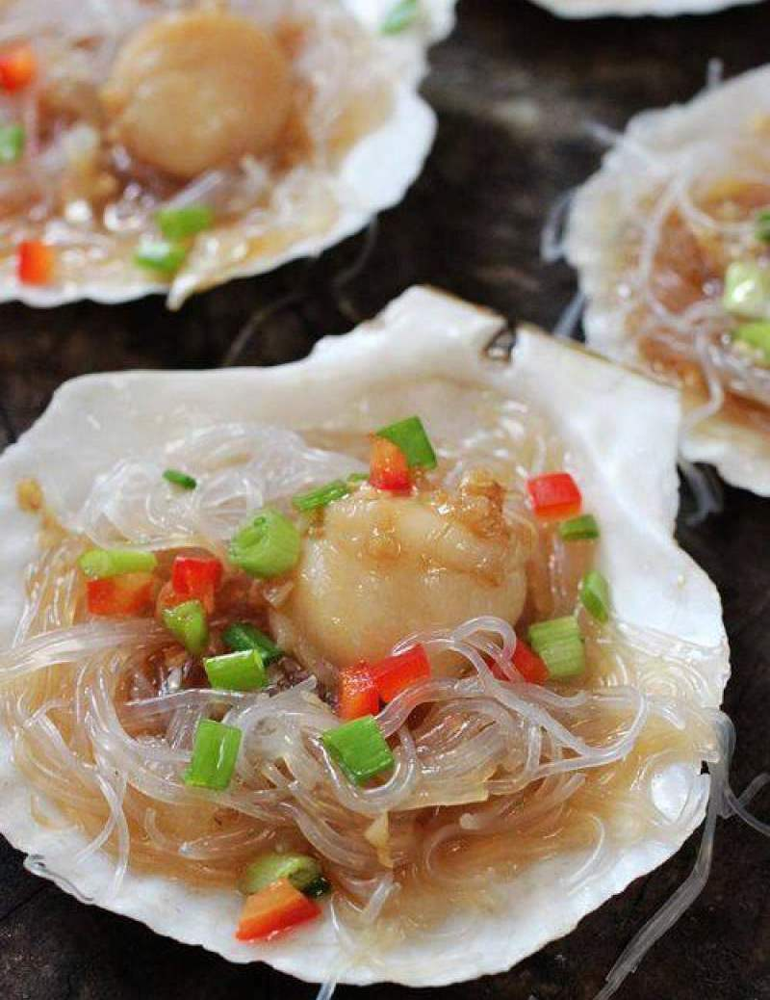

Steamed Clam Vermicelli

Description
Garlicky poached clam with glass noodles. Summer is a great time for seafood and also clay pot dishes. I love to use clay pot because it requires little time in front of fire, comparing with common stir frying recipes.
Ingredients
- 500 g clam
- 100 g golden needle mushrooms
- 100 g soaked glass noodles
- 1 cup water
- 3.5 tbsp. vegetable cooking oil
- ½ cup minced garlic
- 2 tbsp. minced ginger
- 2 tbsp. minced scallion
- 2 tbsp. light soy sauce
- 1 tbsp. oyster sauce
- 2 tbsp. chopped fresh chili pepper
- ¼ tsp. salt
- ½ tsp. sugar
- ¼ tsp. ground pepper
- Soak the freshly bought clam with a very small pinch of salt and oil, so they can spit sands.
- Then heat a large pot of water to a boiling, add ginger and then cook the clams until opened. Don’t over cook in this step. This helps to remove the odd taste.
- In the claypot, place golden needle mushroom in bottom. Then pre-soaked glass noodles in middle and blanched clam on top.
- In a small pan, add 3 tablespoons of vegetable cooking oil and fry garlic, ginger, scallion and chili peppers until aromatic. Add oyster sauce, light soy sauce, salt, sugar and black pepper. Mix well.
- Add 1 cup of water along with the edges . Spread the garlic sauce on the surface of the claypot and cook fro 10 mins.
- Serve hot!